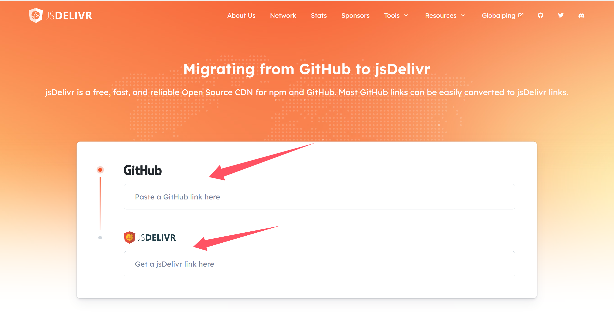
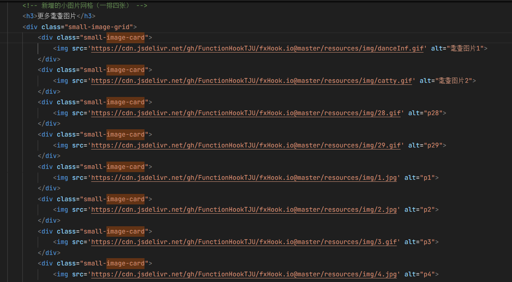

CDN使用指南
TranceDream先生向我提出了使用CDN的建议，他给我push了一个分支，我在这个分支上实现了CDN的使用。遂书写使用指南来对CDN进行更深入的了解
内容分发网络(CDN)是一种通过分布在全球各地的服务器网络来加速网站内容加载的技术。本页面将介绍如何在项目中有效使用CDN。
本网站中的部分图片类静态资源通过cdn.jsdelivr.net提供服务（例如耄耋图片等），其他静态资源（如CSS、JavaScript、字体等）暂时未使用CDN。
为什么使用CDN？
- 提高加载速度：通过从离用户最近的服务器提供内容，显著减少延迟
- 减轻源服务器负担：分散流量，提高源服务器的可用性
- 增强可靠性：多节点架构提供更好的容错能力
- 节省带宽成本：减少源服务器的带宽使用
常用CDN服务推荐
1. Bootstrap CDN
提供Bootstrap框架、jQuery等常用前端库的快速访问。
<!-- Bootstrap CSS -->
<link href="https://cdn.jsdelivr.net/npm/bootstrap@5.3.0/dist/css/bootstrap.min.css" rel="stylesheet"
integrity="sha384-9ndCyUaIbzAi2FUVXJi0CjmCapSmO7SnpJef0486qhLnuZ2cdeRhO02iuK6FUUVM" crossorigin="anonymous">
<!-- Bootstrap Bundle with Popper -->
<script src="https://cdn.jsdelivr.net/npm/bootstrap@5.3.0/dist/js/bootstrap.bundle.min.js"
integrity="sha384-geWF76RCwLtnZ8qwWowPQNguL3RmwHVBC9FhGdlKrxdiJJigb/j/68SIy3Te4Bkz"
crossorigin="anonymous"></script>2. Google Fonts
提供丰富的免费字体资源，优化网页排版。
<!-- 引入Google字体 -->
<link rel="preconnect" href="https://fonts.googleapis.com">
<link rel="preconnect" href="https://fonts.gstatic.com" crossorigin>
<link href="https://fonts.googleapis.com/css2?family=Noto+Sans+SC:wght@300;400;500;700&display=swap" rel="stylesheet">3. Font Awesome
提供大量图标，增强用户界面表现力。
<!-- Font Awesome -->
<link href="https://cdn.jsdelivr.net/npm/font-awesome@4.7.0/css/font-awesome.min.css" rel="stylesheet">4. Axios
强大的HTTP客户端，简化API请求。
<!-- Axios -->
<script src="https://cdn.jsdelivr.net/npm/axios@1.4.0/dist/axios.min.js"></script>CDN使用实践
以本网站的CDN使用为例：
- jsDelivr：用于加载本网站的静态资源（如CSS、JavaScript、字体等）。

Bootstrap CSS
在本网站中，我将github上的项目仓库作为CDN源，通过jsDelivr加载项目的静态资源。例如，Bootstrap CSS的CDN链接为：
https://cdn.jsdelivr.net/npm/bootstrap@5.3.0/dist/css/bootstrap.min.css

Code_display
例如本网站中的picture.html，在图片显示的地址中我并没有使用文件夹中的相对地址，而是使用了jsDelivr提供的CDN地址。